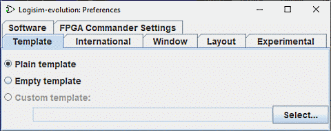

模板选项卡

模板是一个 Logisim 文件，Logisim 创建新项目时会以它为起点。此外，如果某个现有 Logisim 文件的环境配置已被修改，您可以在项目选项窗口中通过重置所有设置按钮“重置”环境，路径为| 项目 |→| 选项... |→| 重置 |。
尽管模板在其他情况下也很有用，但它们特别适合课堂使用，教师可能希望分发一个模板供学生开始使用。如果课程大量使用 Logisim，包括许多更高级的功能，那么简单的默认配置可能过于简单。学生提交的文件如果对环境做了大量配置，教师打开时也可以通过模板恢复课堂所需的环境。
默认情况下会选中普通模板选项，使用 Logisim 自带的默认模板。如果您想要最简配置，可以选择空模板。如果您想指定另一个文件作为模板，请先通过选择...按钮选择模板文件，然后选择自定义模板选项。
也可以通过命令行参数选择模板：-template templateFile
下一节： 国际化选项卡。